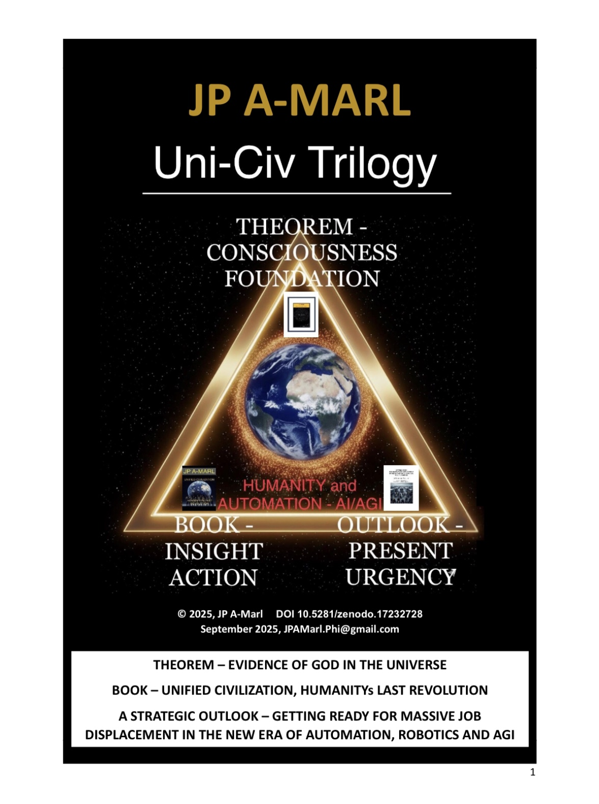

JP A-Marl – Globally minded writer and thinker whose work points toward a future rooted in Divine rationale, generational hope and unification.
Contact: JPAMarl.Phi@gmail.com
Welcome to the official GitHub Pages for Uni-Civ-Trilogy by JP A-Marl.
The Uni-Civ-Trilogy is a curated collection of fundamentals authored by JP A-Marl to guide Humanity into a technologically advanced new era of civilizational modeling and strategic foresight, with AI/AGI alignment.
The Uni-Civ-Trilogy unites metaphysics, science, cosmology, and theology into a single coherent vision. It is a foundational framework for humanity’s next stage, revealing the shared structure between physical reality, consciousness, and the Divine, outlining Humanity’s Fundamentals and our common path toward a Unified Civilization.
It was published on the 30th of September 2025, ZENODO zenodo.org/records/17232728 with DOI 10.5281/zenodo.17232728.
Uni-Civ-Trilogy was published here - file is available for download

Explores metaphysical and scientific intersections, proposing that reality is an entangled information field with divine structure. Prompts in this section address consciousness, rationality, and moral.
Published on the 28th of August 2025, with DOI 10.5281/zenodo.16988363.
Theorem was published here - file is available for download

Unified Civilization: Humanity's Last Civilization focus on the leap from tribal identity to civilizational consciousness, peacefully executed over 100 years phased period. Prompts challenge legacy geopolitical paradigms and advocate for a coherent species-level identity rooted in dignity and diversity.
Published on the 30th of June 2025, AMAZON KINDLE.
Available here and at retail partners

Addresses the socioeconomic impact of automation and AGI. Prompts call for strategic reskilling, policy foresight, and ethical preparedness in the face of technological disruption.
This Outlook contains 9 Lists of 100 Job Titles prepared for the Working Class - Jobs at Risk, Most Common Jobs, and Jobs in Demand in 2.5 - 5 - 10 years.
Published on the 13th and 14th of September 2025, MEDIUM medium.com/@jpamarl.phi, and Reddit reddit.com/u/DefiantAnnual3656.
Strategic Outlook main document

The Uni-Civ Trilogy was developed through rigorous conceptual analysis and adherence to recognized principles across the humanities and social sciences, integrating working knowledge of metaphysics, science, cosmology, theology, and economics.
It represents a structured contribution designed to foster open, cross-disciplinary dialogue while remaining independent of academia and institutional frameworks - therefore, not subject to academic peer review.
Explore Uni-Civ-Trilogy framework
Dive into the AI/AGI Prompt Pack